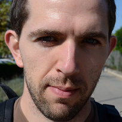

Aslak Johansen
Profile
Aslak is a postdoc at the University of Southern Denmark, Centre for Energy informatics, where he works with services for exposing and abstracting building-related infomation.
In his spare time he does stupid things, like climbing small and medium sized rocks, as well as people. Hiking and photography are also among his interests.
Education
Academia
Professional Experience
Supervision
- Global Software Development project cluster [2011, 2012, spring 2013, fall 2013]
Publications

Contact
- aslakj@gmail.com : email, Jabber, XMPP, Google Talk, AIM
- aslakjohansen : Skype
- aslak@stud.ku.dk : MSN
- 178224423 : ICQ
- (+45) 22 10 42 95 : phone